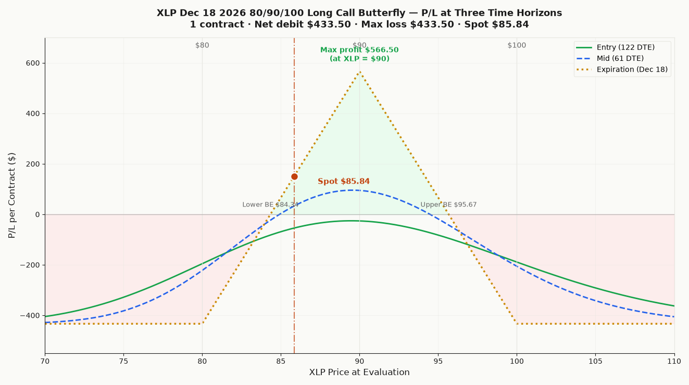

P/L Curve — At Expiry (Dec 18, 2026)

Max Profit
$566.50
at XLP = $90 at Dec 18, 2026 expiry
Max Loss
$433.50
defined risk = net debit
Net Debit
$433.50
1 butterfly × $4.335/share × 100
Spot / DTE
$85.84
XLP @ entry · 122 DTE to Dec 18, 2026
Why This Structure
A long call butterfly on XLP at 122 DTE is a defined-risk, mildly-bullish range bet through year-end, expressing the view that XLP will drift toward $90 by Dec 18, 2026 expiry — but not run away in either direction. The structure has the asymmetry of a one-sided spread (max profit at the single short strike of $90, max loss at both wings), with a profit zone $11.33 wide centered on $90 ($84.34 lower breakeven, $95.67 upper breakeven).
The structure uses calls only — not an iron butterfly — because the thesis is bullish-to-neutral, not short-vol. The long 80C and 100C wings provide defined risk on both sides, capping the loss at the net debit if XLP breaks the wings in either direction. The 2× short 90C is the body: collected twice, twice the cost of the long wings combined, leaving a $4.34 net debit to finance the structure.
Why XLP rather than SPY or QQQ for a Sep/Oct defensive range bet? XLP (Consumer Staples) is a defensive sector ETF that tends to outperform during periods of elevated market stress and underperform during risk-on rallies. It's a natural hedge against the Sep/Oct window (FOMC Sep 16-17, Oct 28-29; Q3 earnings season; seasonal weakness; potential volatility events). The lower 30-day HV (~14%) means XLP's realized vol is below the option-implied vol (~17–22%), so buying premium in XLP is buying time value that should compress over the 122-day hold as long as realized stays contained.
Why a butterfly rather than a debit spread? A bull call spread at 80/90 would have max profit $10 width − $4.34 debit = $5.67 (same), max loss $4.34 (same), but the profit zone is anything above $90 at expiry — not the single point of a butterfly. A butterfly is the right structure when the view is "XLP will pin near $90" rather than "XLP will rally through $90." The current 80/90/100 set-up caps the upside at $90 because the short 90C × 2 begins to drag once XLP moves above $90, converting the trade into a max-loss-at-$100 profile.
Why Dec 18, 2026 (122 DTE)? The Sep/Oct catalyst window is the thesis, not the trade duration. Dec 18 is the closest year-end monthly that gives the trade enough time for (a) the Sep FOMC to land, (b) the Q3 earnings cycle to play out, (c) any post-election-year positioning flows to settle, and (d) the realized vol to compress into the implied vol. By Dec 18, the structure should reflect the realized path of XLP through the entire Sep/Oct window — the trade is a long-dated bet on where XLP settles, not a near-term scalp.
Thesis
- Why XLP, why now: Cash was raised to take advantage of a Sep/Oct window. XLP is a defensive sector ETF with a low beta (~0.55) and low realized vol (~14% 30D HV), which makes it the right vehicle for a defined-risk long-dated range bet during a period when market volatility is expected to be elevated but the direction of volatility is uncertain. The butterfly structure pays off if XLP simply drifts — not if it rallies sharply. The Sep FOMC (16-17), Oct FOMC (28-29), Q3 earnings cycle, and the seasonal Sept weakness in equities all increase the probability of vol expansion, which generally benefits XLP relative to cyclicals. Buying a long-dated range bet on a defensive ETF during a vol-window is paying for optionality in the right direction: XLP should be more stable than the broader market, with less downside skew if the vol window opens to the downside.
- Why long call butterfly over alternatives: A bull call spread (BTO 80C / STO 90C) at the same strikes has the same max profit ($5.67/share) and same max loss ($4.34/share), but the profit zone is anything above $90 at expiry — too generous for a thesis that says "drift, don't rip." A long iron butterfly (adding a put spread at 80/90) would short the put side, adding short premium risk and negative theta at entry. A naked long 80C would have unlimited upside but cost ~$7.575/share with $5.74 of downside risk and no defined exit; the butterfly turns an expensive directional bet into a $4.34 cost with $11.33-wide profit zone and defined risk on both sides. The 1.31:1 reward-to-risk with $433 max loss fits the per-trade sizing budget cleanly.
- Why not a calendar or diagonal: A call calendar (selling short-dated 90C, buying longer-dated 90C) would benefit from time decay but has unbounded risk if XLP runs through the short strike. A diagonal would add a directional tilt but require choosing the wing width carefully. The butterfly is the cleanest expression of "XLP drifts toward $90 over 4 months" with no path dependency.
- Why XLP and not SPY: SPY is the natural choice for a year-end range bet, but SPY's IV (~12-14% at 122 DTE) is already compressed — buying premium in SPY is buying vol that's at the bottom of its range. XLP's IV is structurally higher (ETF option surface is less efficient than SPX/SPY) and the trade collects a fatter premium per dollar of width. XLP's lower beta also makes the directional risk smaller: if the broader market sells off, XLP tends to underperform less, giving the trade a wider cushion to the lower breakeven.
- Why raise cash for this: This position is part of a broader portfolio adjustment that pulled capital out of cash and into long-dated, defined-risk structures targeting the Sep/Oct window. The XLP butterfly is one of several positions sized to absorb the elevated-vol window without taking unlimited directional risk. The 1-contract size keeps each individual trade within the per-trade risk budget even if multiple Sep/Oct trades stack.
Risk
| Risk | Magnitude | Mitigation |
|---|---|---|
| XLP closes below $80 at Dec 18, 2026 PM settlement | −$433.50/contract (max loss = net debit) | Lower breakeven $84.34 — $0.50 below current spot. Requires a −2% drop from $85.84. XLP's 30-day HV (~14%) implies ±1σ 1-day move of ±0.85%; a sustained 122-day ±2σ drop is rare but possible during a Sept vol event. |
| XLP closes above $100 at Dec 18, 2026 PM settlement | −$433.50/contract (max loss = net debit; the short 90C × 2 drags symmetrically to the upside) | Upper breakeven $95.67 — $9.83 above current spot. Requires +11.4% from spot. Defensive sector ETFs rarely rally this much over 4 months; the structure is positioned to benefit if XLP stays rangebound. |
| Sept FOMC or Oct FOMC hawkish surprise → equity vol expansion → XLP rally (sector rotation into defensives on rate-cut hopes) | Bullish for XLP but hurts the upper side of the butterfly if XLP > $90 | Manage by closing at 50% of max profit (~$283) if XLP > $88 within 30 DTE. The structure is designed to *not* capture a full XLP rally — that's a feature, not a bug, given the thesis is range-bound. |
| Sept/Oct equity sell-off → XLP relative outperformance but absolute price decline | Lower breakeven $84.34 is the trip-wire. A −3% sell-off from $85.84 would push XLP below the lower breakeven. | Stop loss at $80 (max loss); roll the short 90C × 2 down to 85C × 2 if XLP drops through $82 to recover some of the long 80C wing protection. Hard close at $80. |
| Ex-dividend date in Sep or Dec (~$0.40–$0.50 estimated) early assignment on the short 90C × 2 if XLP > $90 ITM | ~$0.40–$0.50 of additional dividend loss per short contract × 2 = up to $100/contract in extreme cases | Monitor 90C open interest and ex-div date. Early assignment unlikely unless XLP is well above $90 and the short 90C is deep ITM near a div date. Manage by closing the short legs before div date if XLP > $91. |
| Vol contraction (IV crush) | Net vega is ~+$0.04 per 1% IV. Modestly positive. A 5-vol-point crush costs ~$20/contract. Manageable. | 122 DTE gives time for vega risk to bleed off through theta. The structure is designed for a *modest* vol expansion path, not a vol crush. |
| Path dependency through Sep/Oct | Butterfly pays off at expiry based on XLP at Dec 18 close, not at any earlier date | The 122-DTE structure gives the trade 4 full months of vol events to play out. If XLP pins in the profit zone at any point in the final 30 DTE, consider closing early (50%-profit rule). |
| Sector-specific risk (consumer staples deterioration) | XLP is concentrated in a few large-cap staples names (WMT, PG, KO, COST, PM). Earnings misses or consumer slowdown could drive XLP through $80. | Hard stop at $80. If XLP holds above $80, the structure remains a defined-risk long bet on the sector recovery by year-end. |
Position Payoff at Three Time Horizons
The chart above shows the position's P/L as a function of XLP's price at three evaluation dates: now (entry, 122 DTE), mid-life (~61 DTE, after half the time decay), and at expiration on Friday December 18, 2026 PM-settled close. Three colored curves — green for "now," blue dashed for mid-life (after early decay), gold dotted for expiration (the canonical butterfly payoff with a single peak at $90).
Read the chart:
- Spot $85.84 sits $1.50 above the lower breakeven $84.34 and $9.83 below the upper breakeven $95.67. The trade is in the profit zone now (any close in $84.34–$95.67 at Dec 18 expires above water).
- Max profit $566.50/contract at XLP = $90 at Dec 18 close. A single point, not a range — the structure pays the maximum only if XLP pins exactly at the short strike at expiry. P/L drops linearly on either side of $90.
- Max loss plateau −$433.50/contract holds for everything below $80 OR above $100 at expiration. The wings cap the loss symmetrically.
- The transition zones $80–$90 and $90–$100 are linear ramps: $80→$90 ramps from −$433.50 to +$566.50 (slope $100/point); $90→$100 ramps from +$566.50 to −$433.50 (slope −$100/point).
- The profit zone $84.34–$95.67 is the only range where P/L is positive. Width: $11.33, centered on $90. The trade has roughly 55% probability of profit based on XLP's 30D HV (14%) and a 122-DTE drift-implied distribution.
Key levels on the chart:
- Spot $85.84 — current underlying, +1.50 above lower breakeven, +5.16 below the peak at $90.
- Lower breakeven $84.34 — XLP needs to drop −1.75% from spot to wipe out the debit. The $1.50 cushion is the structural margin of safety on the downside.
- Short strike $90 — the position starts losing intrinsic per dollar once XLP crosses $90 on the upside; this is where the gold curve turns down.
- Upper breakeven $95.67 — XLP needs to rally +11.4% from spot to wipe out the debit on the upside.
- Max profit $566.50/contract at XLP = $90 at Friday Dec 18, 2026 PM settlement.
- Max loss −$433.50/contract at any XLP close below $80 OR above $100 at Dec 18, 2026 PM settlement.
Three time horizons — what changes:
- Now (122 DTE, green curve): Theta is near zero; vega dominates the greeks. A 1% IV move shifts P/L by ~$4/contract in either direction. The shape is roughly the same as the expiration curve because time decay hasn't eroded the wings yet.
- Mid-life (~61 DTE, blue dashed curve): Theta becomes more positive as the structure moves into the back half of its life. The peak at $90 narrows slightly; the wings erode. P/L near spot ($85.84) starts to flatten toward the expiration profile.
- At expiration (Dec 18, 2026, gold dotted curve): The canonical butterfly payoff — single peak at $90, two flat wings below $80 and above $100. This is what the trade settles to.
About this article
Editor: Tredey Editorial Desk. The desk has tracked options, index-derivative structure, and daily U.S. equity markets since 2017, with a working book in SPX/XSP index options and a public trade log that records every entry, adjustment, and close.
Launched: Tredey went live in as an editorial trading-journal site covering SPX/XSP options, daily market outlooks, and the standard operating procedure that governs every position recorded on the trade log.
Editorial process: Each forecast distils overnight data and primary sources (Cboe option chains, Federal Reserve releases, Treasury auctions, FRED historicals) into the worked-example frame: what the tape is saying, the mechanism behind the move, what to do this week. Forecasts are reviewed against the live close on the next publication; the track record is self-auditing on the forecasts page.
Corrections policy: When an article gets a fact wrong (wrong strike, wrong P&L, wrong expected-move calculation), we correct it inline and append a dated correction note at the top of the affected page. Substantive corrections are credited to the reporter with permission. Send corrections to the address on the contact page.
Disclosure: Tredey does not provide trading signals, price targets, or financial advice. The desk may hold the positions, options, or underlyings mentioned in a forecast or trade-log entry at the time of publication; positions are disclosed in the trade-log entry itself. Nothing on this site is investment advice — see the full disclaimer.